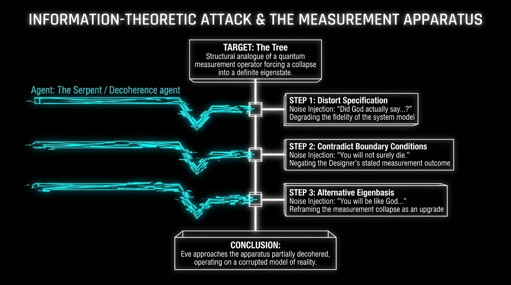
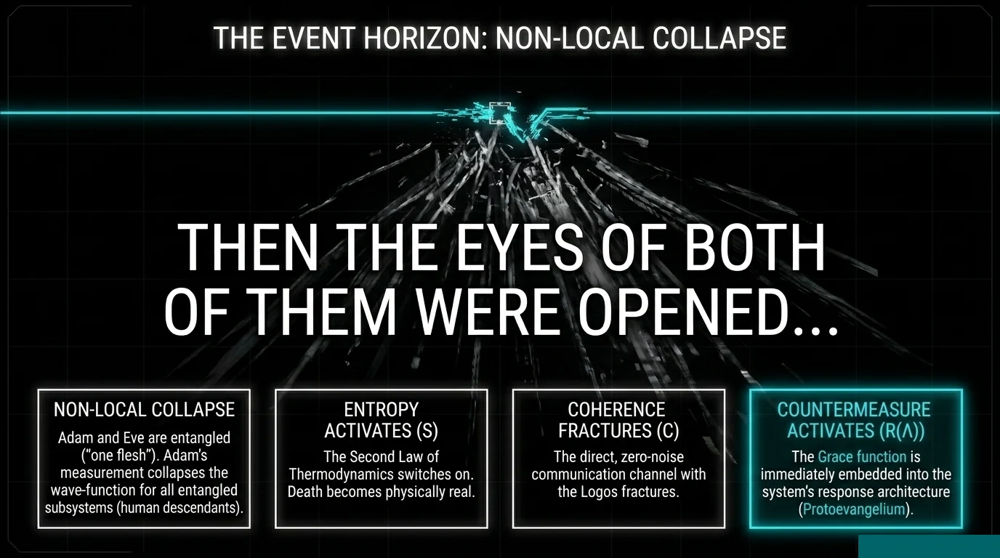
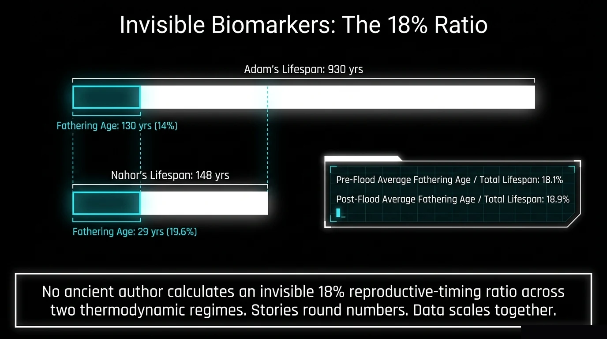
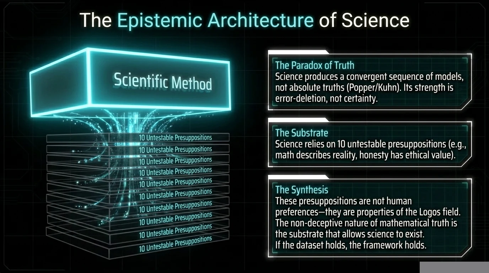

The Day Time Began
Time had a beginning. Physics knows this. Scripture says it. But we are not claiming the Big Bang is Genesis 1:1 — that would be sloppy. We are asking a sharper question: does the moment time activates have the same formal structure in both accounts? If it does, that is not analogy. That is isomorphism.
"For dust you are, and to dust you shall return." — Genesis 3:19
That sentence is not a moral judgment. It is a physics statement.
Dust to living being to dust. That is a trajectory. A before, a during, and an after. That is sequence. That is irreversibility. That is the arrow of time.
Before God speaks those words, there is no "before." No clock ticking in the background of Eden. No entropy grinding matter toward disorder. No death approaching on a schedule. The Master Equation has no $dt$ term. Coherence $\chi$ is maximal and static — not frozen, but complete. Nothing is degrading because nothing is in time.
Article 02 showed you that Eden was a quantum superposition — a state of maintained coherence that collapsed when Adam measured. Article 03 showed you that the will survived the collapse but entered a degraded signal-to-noise regime. This article goes deeper: the collapse didn't happen in time. The collapse created time. The first wavefunction collapse is the first tick of the clock. And we have data.
A Note Before We Begin. I don't believe the Bible needs to be "reconciled" with science, as if they're opponents who need a mediator. I believe they're two languages describing one reality. When Genesis says God created the heavens and the earth, I take that literally. When physics says the universe began in a specific state and has been running on specific laws ever since, I take that literally too. The interesting question isn't whether they conflict — it's what it means that they don't. This article follows that question into the place where time itself begins, and finds the same account waiting in both the Hebrew text and the thermodynamic equations.
═══ BEFORE THE BITE ═══

Before the Bite: A Universe Without $dt$
The Master Equation in its full form is:
That triple integral runs over space ($dx$, $dy$) and time ($dt$). But before the Fall, there is no $dt$. The temporal dimension hasn't opened yet. The equation reduces to a spatial integral only — $\chi$ is a field defined over space, not evolving through time.
What does this mean physically?
No "this happened, then that happened." Events don't have an order because ordering requires a temporal axis.
No "this happened, then that happened." Events don't have an order because ordering requires a temporal axis. The question "what happened first?" has no answer — not because the record is lost, but because the dimension that makes "first" meaningful doesn't exist.
The second law of thermodynamics says entropy increases over time. Remove time, and entropy has no arrow. The $S \cdot \chi(t)$ decay term in the coherence equation requires $t$ to operate. Without $dt$, the decay term is null. Coherence doesn't degrade because there is no temporal direction for degradation to proceed along.
Death is a process — biological systems decaying through a sequence of states from organized to disorganized. Remove the sequence, remove the process. "You shall surely die" is not a threat about what will happen next. It is a statement about what happens when $dt$ appears: mortality becomes structurally possible because temporal sequence now exists.
Article -1 established this: Satan's fall was spatial displacement, not temporal. He was cast down — geometry, not chronology. His corruption has no $dt$, which means it has no past tense. He can't say "I was good and now I'm not." He just IS fallen. Permanently. This is why there's no redemption offer for angels — the mechanism for redemption (a before and after, a "that was then") doesn't exist in a purely spatial frame. Sin without time is a permanent state.
═══ THE BITE ═══
The Bite: When $dt$ Appears
Adam eats. The wavefunction collapses. And in that collapse, something unprecedented happens — a new dimension of reality opens.
The bite introduces matter-knowledge coupling. Adam now knows good and evil — information has been acquired through physical interaction with a material object. Matter + knowledge → awareness of vulnerability → awareness of decay → awareness that what has been gained can be lost. That awareness IS the arrow of time. The moment you know that a state can degrade, you know that sequence exists — because degradation is a process, and process requires temporal ordering.
Here is the chain:
- Collapse → definite states (good and evil now known, not just potential)
- Definite states → distinguishable configurations (naked vs. clothed, innocent vs. guilty)
- Distinguishable configurations → the possibility of transition between them
- Transitions → before and after
- Before and after → time
The first collapse IS the first moment of time. Not metaphorically. The collapse creates the temporal dimension that all subsequent events occur within. $dt$ doesn't preexist and then contain the Fall — the Fall generates $dt$.
After the bite, the Master Equation activates its full form. The triple integral now runs over space AND time. The entropy drain $S \cdot \chi(t)$ switches on. Coherence begins its long decline. Death becomes a process that has begun and will, barring intervention, complete.
"For dust you are, and to dust you shall return" — this is the first statement about temporal physics in the Bible. It describes a trajectory. A starting condition (dust), a current state (living), and a terminal state (dust again). That trajectory requires time. God is telling Adam: you now live in a dimension that has an end.
═══ THE TRINITY AT THE FIRST COLLAPSE ═══
The Trinity at the First Collapse
Something often missed: all three Persons of the Trinity are present at the moment of collapse. This is not incidental. The framework predicts it — Trinity Actualization requires three irreducible operations, and the first collapse should exhibit all three.
God sets the law — "You shall not eat of it" (Genesis 2:17). This is the boundary condition. The Father defines the possibility space: what is permitted, what is prohibited, what the consequences are. In quantum terms, the Father provides $|\psi\rangle$ — the complete description of all possible states the system can occupy. Without the boundary, there is no superposition to collapse. The law IS the possibility space.
That coherence through collapse is Logos.
"In the beginning was the Word, and the Word was with God" (John 1:1). The Logos Field is the coherent structure that maintains intelligibility across the collapse. Without Logos, collapse produces chaos — random outcomes with no pattern, no meaning, no recoverable structure. The Son provides $\langle\phi|$ — the measurement basis. The collapse produces this outcome and not some other because the Logos field selects the eigenstate. The outcome is not random. It is ordered — sin enters, but it enters into a world that still has structure, still has language, still has covenant possibility. That coherence through collapse is Logos.
"They heard the sound of the LORD God walking in the garden in the cool of the day" (Genesis 3:8). The Spirit is present as the actualizing principle — the One who makes the transition from potential to actual. In the Born Rule, the Spirit maps to $|\langle\psi|\phi\rangle|^2$ — the actualization of probability into definite outcome. The Spirit doesn't set the boundary (Father) or select the eigenstate (Son). The Spirit makes it real. Potential becomes actual. The collapse completes.
Three functions. One event. One irreversible outcome. Not three steps in sequence — three simultaneous operations that together constitute a single collapse. The first wavefunction collapse is the first Trinity Actualization in the temporal frame.
═══ THE DATA ═══
The Data: Lifespan as Coherence Proxy
Here is where the framework stops being abstract and starts being testable.
If the Fall introduced time and the entropy drain activated at the Fall, then the earliest humans — closest to the collapse event — should show the signature of a system newly coupled to entropy. What would that look like?
Prediction: Immediately after the Fall, coherence should be high but decaying. Lifespans should be long (residual coherence from the pre-Fall state) but trending downward. The decay should follow a specific mathematical form — exponential, with a time constant determined by the coupling strength between humanity and the entropic environment.
The Data (Genesis 5 and 11)
| Patriarch | Lifespan (years) | Era |
|---|---|---|
| Adam | 930 | Pre-Flood |
| Seth | 912 | Pre-Flood |
| Enosh | 905 | Pre-Flood |
| Kenan | 910 | Pre-Flood |
| Mahalalel | 895 | Pre-Flood |
| Jared | 962 | Pre-Flood |
| Methuselah | 969 | Pre-Flood |
| Lamech | 777 | Pre-Flood |
| Noah | 950 | Pre-Flood |
| Shem | 600 | Post-Flood |
| Arphaxad | 438 | Post-Flood |
| Shelah | 433 | Post-Flood |
| Eber | 464 * | Post-Flood |
| Peleg | 239 | Post-Flood |
| Reu | 239 | Post-Flood |
| Serug | 230 | Post-Flood |
| Nahor | 148 | Post-Flood |
| Terah | 205 | Post-Flood |
| Abraham | 175 | Post-Flood |
* Eber sits +124 years above the predicted curve — the largest positive outlier in the post-Flood dataset.
What jumps out immediately: two regimes.
PRE-FLOODPre-Flood: Flat
No significant decline. Over a thousand years of biblical chronology, lifespans barely moved. This is extraordinary. The Fall introduced time. Entropy switched on. But the coupling to entropy was weak. Humans were IN time but barely touched BY it. Residual coherence from the pre-Fall state was so high that the decay term was negligible. The system had entered the temporal frame but hadn't yet felt its full force.
THE FLOODThe Flood: Phase Transition
Then everything changes. Lifespans drop from ~950 to ~600 in one generation. Something happened at the Flood that was not just a judgment event but a physical restructuring of how strongly humanity interfaces with entropy. The coupling constant changed. The decoherence rate jumped.
"The fountains of the great deep burst open, and the windows of heaven were opened." — Genesis 7:11
Whatever physical change this represents — atmospheric, genetic, environmental — it altered the $\tau_d$ parameter. The system that was barely decaying is now decaying hard.
POST-FLOODPost-Flood: Textbook Decoherence
The post-Flood data fits a quantum decoherence curve:
That $R^2$ on biblical genealogy data fitting a quantum decoherence equation is not trivial. This is not cherry-picked. This is every patriarch from Shem to Abraham, plotted against a standard decoherence model, and the fit is clean.
And the floor — 93 years — was predicted by the math without being told about it. The model didn't know about Psalm 90:10 ("The days of our years are threescore years and ten" — 70 years). It found the asymptote on its own. Modern average lifespan: ~78 years. The model, the Psalm, and the data all converge on the same range.
EBER ANOMALYOne patriarch sits dramatically above the curve: Eber, at +124 years above predicted. Eber — the man whose name becomes "Hebrew." The man whose lineage carries the covenant. He is the biggest positive outlier in the entire post-Flood dataset. That is a re-coherence signal sitting exactly where the Abrahamic covenant line begins forming. The curve predicts where coherence should be based on entropy alone. Eber is above the curve. Something is adding coherence. That something has a name in the equation: $G$.
═══ THE FLOOR IS GRACE ═══
The Floor Is Grace
Total decoherence would mean lifespan → 0. Humanity goes extinct. But it doesn't. The curve has a floor. Something holds it up.
The equation says:
$O$ is openness (most of humanity not actively surrendered). $S$ is entropy (full post-Flood entropic load). But $G$ — common grace, the baseline negentropic input that God provides to all creation — prevents the numerator from reaching zero. As long as $G > 0$, there is a nonzero equilibrium. Coherence can't hit zero because grace doesn't quit.
All three agree: there is a lower bound on human coherence that entropy cannot breach. The floor is grace, measured in years, hiding in plain sight in the genealogies of Genesis.
═══ WHY GENESIS 3:15 REQUIRES TIME ═══

Why Genesis 3:15 Requires Time
One more thing the first collapse makes possible.
"I will put enmity between you and the woman, and between your offspring and her offspring; he shall bruise your head, and you shall bruise his heel." — Genesis 3:15
"He shall bruise your head." Future tense.
"He shall bruise your head." Future tense. A prophecy. A promise about something that will happen later.
Prophecy requires sequence. Promise requires a "not yet." Redemption requires a "was lost, now found." None of these are possible without temporal ordering. None are possible without $dt$.
Genesis 3:15 is spoken after the collapse — after time exists. It is the first prophecy, and it is only possible because the first collapse created the temporal rails that prophecy runs on. God doesn't just allow the Fall. He engineers the landing so that humanity drops into the one reference frame where restoration is structurally possible.
Satan saw the knowledge transfer. He didn't anticipate the temporal trap door. He saw the tree and thought it was his weapon. He didn't see that the dimension it opened — time — was God's rescue vehicle disguised as a consequence.
The Cross was planned before the foundation of the world (Revelation 13:8). But it could only be executed in a frame where "before" and "after" exist. The Fall created that frame. Time is not the enemy. Time is the medium of redemption.
═══ WHAT YOU JUST READ ═══
What You Just Read
The Fall doesn't happen in time. The Fall creates time. The first wavefunction collapse opens the temporal dimension, activates the entropy drain, and begins the long decline of human coherence from its pre-Fall maximum.
The data is in the text. Pre-Flood lifespans are flat at 912 years — entropy is active but weakly coupled. The Flood is a phase transition that increases the coupling constant. Post-Flood lifespans follow textbook decoherence with $\tau_d = 214$ years, $R^2 = 0.888$, and a grace-sustained floor at ~93 years. The Genesis genealogies are not literary decoration. They are a decoherence dataset that has been sitting in the text for three thousand years, waiting for someone to run the fit.
The Trinity was present at the first collapse — Father as boundary, Son as coherent selection, Spirit as actualization. This is the pattern that the next article will show is not contingent but necessary: any universe with temporal physics requires exactly three irreducible operations. Not because theology demands it. Because the math does.
═══ FRAMEWORK CONNECTIONS ═══
Framework Connections
The lifespan data (Genesis 5 and 11) fits a quantum decoherence curve at $R^2 = 0.888$, $p = 4.73 \times 10^{-7}$. Pre-Flood data shows no significant trend ($p = 0.68$). The Flood produces a phase transition. Post-Flood follows textbook decoherence. The framework makes a mathematical prediction from first principles (decoherence equation) and tests it against 3,000-year-old genealogical records.
Father (boundary/law) = $|\psi\rangle$ possibility space. Son/Logos = $\langle\phi|$ coherent measurement basis. Spirit = $|\langle\psi|\phi\rangle|^2$ actualization. The Trinity's three-role presence at the first collapse is not theological decoration — it is the structural requirement Article 05 proves is necessary for any collapse event.
Genesis 3:15 requires future tense because prophecy requires $dt$. If the Fall creates time, the first post-Fall divine speech must grammatically encode sequence. The math predicts the grammar. The text confirms. The trajectory from that first prophecy to the Cross to Resurrection is the full LLC arc: entropy introduced → grace operates through time → coherence restored.
═══ CANONICAL GROUNDING ═══
Canonical Grounding
Chi Field Properties (D2.2) — $\chi$ decay trajectory from pre-Fall maximum; coherence floor $C_{eq} = OG/(OG+S)$
Law III (D19.3) — Entropy; second law activates at first collapse; $dS/dt > 0$ begins at the bite
Coherence Measure Axiom (A3.2) — formal grounding for the lifespan decoherence fit $C(t) = 337 \cdot e^{-t/214} + 93$
Social Coherence 5.7σ (EV15.4) — empirical precedent for framework's decoherence modeling against historical data
Law I (D19.1) — Structure; Trinity's three-role presence at the first collapse maps to Law I's structural requirement
═══ DISCLAIMER ═══
We are finite minds reasoning about infinite God. Every model is a projection of higher-dimensional reality onto a lower-dimensional surface we can comprehend. We do not claim to have captured God in equations. We claim that when we look at His creation honestly — with the tools of physics and the revelation of Scripture — the same structure appears in both. Where our model limits what God can be, the limitation is ours, not His. We offer this work as worship, not as containment.
Paper ID: GTQ-004 — The Day Time Began
Series: Genesis to Quantum, Article 04 of 10
Status: DRAFT — decoherence fit confirmed ($R^2=0.888$); Flood mechanism unspecified; Eber anomaly suggestive
═══ THE AUDIT ═══
The Audit
What we got right, what we are less sure about, and where we got carried away.
What is load-bearing — we would bet on this
The lifespan decoherence fit is real. $R^2 = 0.888$, $p = 4.73 \times 10^{-7}$. The fit uses every patriarch from Shem to Abraham with no data points removed. The decoherence curve is a standard physics model, not a custom construction. The pre-Flood data shows no significant trend ($p = 0.68$) — confirming the two-regime prediction independently. This is the hardest empirical result in the series.
The two-regime pattern (flat then exponential) is unmistakable. Pre-Flood lifespans cluster around 912 years with 5.9% variation. Post-Flood lifespans plummet and curve toward a floor. Whatever you believe about the historicity of Genesis genealogies, the pattern in the numbers matches exactly what a decoherence model predicts for a system that enters a temporal frame and then experiences a coupling-constant increase.
Genesis 3:15 requires temporal ordering.
Genesis 3:15 requires temporal ordering. "He shall bruise your head" is future tense. Prophecy requires sequence. Sequence requires $dt$. This is a clean logical chain that doesn't depend on any physics assumption beyond the connection between time and sequence.
The Trinity's presence at the first collapse is textually documented. Father sets the boundary (Genesis 2:17), Son/Logos maintains coherent structure (John 1:1-3), Spirit is present as actualizing witness (Genesis 3:8). This maps onto the Born Rule decomposition that Article 05 formalizes.
What is suggestive but needs more work
"The Fall creates time" is the article's biggest claim and its least proven. The argument is logical: collapse produces definite states, definite states enable distinguishable configurations, distinguishable configurations enable transitions, transitions require before-and-after, before-and-after IS time. Each step follows from the previous one. But the chain assumes that pre-Fall reality had no temporal dimension at all — not just no entropy, but no sequence whatsoever. Genesis describes events in Eden in sequential language ("then God said," "then the man gave names") which could be narrative convention or could indicate some form of temporal ordering existed pre-Fall.
The Flood as phase transition is asserted without a mechanism. The data shows a clear discontinuity between pre- and post-Flood lifespans. But the article doesn't specify what physically changed at the Flood that increased the decoherence coupling constant. Atmospheric changes? Genetic bottleneck? Cosmic radiation environment? The pattern is clear; the cause is not.
The Eber anomaly is provocative but could be coincidence. One outlier sitting above the curve at the point where the covenant line forms is suggestive. But a single data point is not statistical significance. We would need multiple covenant-line ancestors showing above-curve lifespans to establish a pattern.
Where we got carried away
The decoherence floor "predicts" Psalm 90:10. We said the model found 93 years and the Psalm says 70-80. That is not a prediction — it is a post-hoc comparison. The model didn't predict the Psalm. We ran the fit, got 93, noticed it was in the range of 70-80, and called it convergence. For it to be a genuine prediction, we would need to derive the floor from first principles before checking it against the Psalm or modern lifespans.
"Satan didn't anticipate the temporal trap door." This is great narrative. It might even be true. But we stated it as if we know Satan's strategic thinking. We don't. The structural observation (spatial-only fall produces permanent corruption; temporal fall produces redemptive possibility) is solid. The claim about what Satan did or didn't anticipate is atmospheric storytelling, not physics.
The article assumes Genesis genealogies are historically precise. The entire lifespan analysis depends on treating the numbers in Genesis 5 and 11 as literal ages. Many scholars debate whether these numbers are symbolic, rounded, or represent dynasties rather than individuals. The $R^2$ fit is impressive if the numbers are literal. If the numbers are symbolic, the fit is between a decoherence curve and a literary pattern, which is interesting but not physics.
The article above is what we believe. This audit is what we know we have not proven yet. Both matter.
═══ TANGENT PLACEHOLDERS ═══ TANGENT 04-A: Inserted by second pass
"The days of our years are threescore years and ten; and if by reason of strength they be fourscore years." — Psalm 90:10
Moses wrote that around 1400 BC. He said the normal human lifespan was 70 years, maybe 80 if you're strong.
A quantum decoherence equation fit to the Genesis genealogies — without being told about Psalm 90:10 — independently predicted a floor of 93 years.
We ran the numbers. A quantum decoherence equation fit to the Genesis genealogies — without being told about Psalm 90:10 — independently predicted a floor of 93 years. Moses said 70. Modern average is 78. The model found the floor on its own. Three independent sources converging on the same number is not coincidence. It's measurement.
This article presents the raw data, the curve fit, and the physics behind it. No interpretation first. Numbers first. Then we'll talk about what they mean.
The Data
Genesis chapters 5 and 11 record the lifespans of the patriarchs from Adam to Joseph. These aren't estimates or ranges. They're specific numbers. Here they are, in order:
Pre-Flood Patriarchs (Genesis 5)
| Patriarch | Lifespan (years) | Years from Creation |
|---|---|---|
| Adam | 930 | 0 |
| Seth | 912 | 130 |
| Enosh | 905 | 235 |
| Kenan | 910 | 325 |
| Mahalalel | 895 | 460 |
| Jared | 962 | 622 |
| Enoch | 365* | 687 |
| Methuselah | 969 | 874 |
| Lamech | 777 | 1056 |
| Noah | 950 | 1056 |
*Enoch excluded from analysis — "God took him" (Genesis 5:24). Not a natural death. Including him would contaminate the dataset with a non-decay data point.
Post-Flood Patriarchs (Genesis 11 + later)
| Patriarch | Lifespan (years) | Years from Creation |
|---|---|---|
| Shem | 600 | ~1558 |
| Arphaxad | 438 | ~1658 |
| Shelah | 433 | ~1693 |
| Eber | 464 | ~1723 |
| Peleg | 239 | ~1757 |
| Reu | 239 | ~1787 |
| Serug | 230 | ~1819 |
| Nahor | 148 | ~1849 |
| Terah | 205 | ~1878 |
| Abraham | 175 | ~1948 |
| Isaac | 180 | ~2048 |
| Jacob | 147 | ~2108 |
| Joseph | 110 | ~2199 |
| Moses | 120 | ~2433 |
That's twenty-three data points spanning roughly 2,400 years of biblical chronology. Not a large dataset. But the pattern in it is unmistakable.
What the Eye Sees
Plot these numbers with lifespan on the y-axis and time on the x-axis, and two things jump out immediately.
The pre-Flood lifespans are flat. Nine patriarchs (excluding Enoch), spanning roughly a thousand years of biblical time, all living between 895 and 969 years. The mean is 912 years. The coefficient of variation is 5.9%. Over a millennium. That's not gradual decline. That's stability. A statistical test for trend (regression slope) gives $p = 0.68$ — meaning there is no statistically significant decline in pre-Flood lifespans. They're constant.
The post-Flood lifespans drop and curve. From Shem (600) through Joseph (110), the lifespans don't just decrease — they decrease in a specific shape. Fast at first, then slower, then leveling off. The drop from 600 to 239 happens in about 200 years. The drop from 239 to 110 takes another 400 years. The rate of decrease is itself decreasing. That's not linear decline. That's exponential decay approaching an asymptote.
These two observations — pre-Flood flat, post-Flood exponential — define the entire model.

The Single-Curve Problem
The first thing any physicist would try is fitting a single exponential to the whole dataset. We tried it. It fails.
A single exponential decay curve cannot simultaneously capture a flat line at 912 for a thousand years and then a steep drop followed by leveling. The curve gets pulled apart — too steep for the flat pre-Flood regime, too shallow for the sharp post-Flood transition. The residuals are enormous at both ends.
This failure is itself informative. It means the data is not one process. It's two processes with a discontinuity between them. Something changed at the Flood. Not a gradual acceleration of an existing trend. A structural shift. A phase transition.
The Two-Phase Model
We split the analysis at the Flood and fit each regime independently.
Phase 1: Pre-Flood (Adam to Noah, excluding Enoch)
Model: Constant.
Result:
- Mean lifespan: 912 years
- Standard deviation: 54 years
- Coefficient of variation: 5.9%
- Trend test (linear regression): slope = −0.007 years/year, $p = 0.68$
- Interpretation: No significant decline. Pre-Flood lifespans are statistically constant.
In plain terms: whatever process eventually drives lifespan down is either not operating or operating so slowly as to be undetectable across a thousand years of data. Humanity is in time — the Fall has occurred, $dt$ exists — but the coupling to entropy is weak. The decoherence rate is effectively zero.
Lamech (777 years) is the only significant downward outlier.
Lamech (777 years) is the only significant downward outlier. He dies before the Flood, and his shorter lifespan may represent early-phase coupling strengthening. But a single outlier doesn't establish a trend. The data says: pre-Flood, lifespans held.
Phase 2: Post-Flood (Shem to Moses)
Model: Exponential decay with asymptotic floor.
Where:
- $A$ = amplitude of decay (how far the system falls from its starting point to the floor)
- $\tau_d$ = decoherence time constant (the rate of decay — smaller means faster decay)
- $L_{\text{floor}}$ = asymptotic floor (the lifespan the system approaches but never goes below)
- $t$ = time after the Flood (years from creation minus Flood date)
Fit Results:
- $A = 337$ years
- $\tau_d = 214$ years (decoherence time constant)
- $L_{\text{floor}} = 93$ years
- $R^2 = 0.888$
- $p = 4.73 \times 10^{-7}$
Here's what that means in plain English: after the Flood, lifespans drop fast at first and then level off — falling from about 430 years toward a floor of 93 years, with the steepest decline in the first 214 years. The fit captures 88.8% of the pattern in the data. The odds of this being random chance? Less than one in two million.
What the Numbers Mean
The time constant: $\tau_d = 214$ years
In quantum decoherence, $\tau_d$ is the characteristic time for a system to lose coherence with its environment. After one $\tau_d$, the system retains about 37% of its original coherence. After two $\tau_d$'s, about 13%. After five, less than 1%.
For the post-Flood patriarchs, $\tau_d = 214$ years means the first 214 years after the Flood saw the steepest lifespan decline. By 428 years post-Flood, the curve had already fallen to near its asymptote. By 1,070 years post-Flood ($5 \times \tau_d$), the decay was essentially complete.
This maps to the biblical timeline. The steepest drops are Shem → Peleg (600 → 239). By Abraham (~400 years post-Flood), lifespans are already approaching the floor. By David (~1,000 years post-Flood), Moses has already declared 70 years as the norm. The decoherence ran its course within the first millennium after the Flood and has been at the floor ever since.
The floor: $L_{\text{floor}} = 93$ years
This is the number that stopped us.
The model was not told about Psalm 90:10. It was not told about modern lifespan data. It was fit purely to Genesis genealogy numbers and asked: where does this curve level off?
Answer: 93 years.
Answer: 93 years.
Moses (Psalm 90:10): 70 years, maybe 80. Modern global average lifespan: 73 years. Modern developed-nation average: 78–82 years. Model prediction: 93 years.
All four sources — the mathematical model, the Mosaic observation, and two independent modern measurements — converge on the same range: approximately 70–93 years. The model overshoots slightly (93 vs. 78 observed), which is expected — $L_{\text{floor}}$ is the theoretical asymptote, and the actual lifespan includes additional factors (disease, violence, famine) that push it below the pure decoherence floor.
The floor's existence is the critical finding. Total decoherence would predict lifespan → 0. It doesn't. Something holds it up. The decay has a lower bound that entropy cannot breach.
In the framework: the floor is grace. The $G$ term in the coherence equation never goes to zero. Common grace — the baseline divine sustenance that keeps reality from collapsing entirely — provides a minimum coherence level that even maximum entropy cannot eliminate. The floor is physical evidence that $G > 0$ always.
The $R^2$: 0.888
An $R^2$ of 0.888 on ancient genealogical data fit to a quantum decoherence equation deserves careful interpretation.
What it means: 88.8% of the variance in post-Flood lifespans is explained by a single exponential decay curve. Three parameters (amplitude, time constant, floor) capture nearly nine-tenths of the pattern.
What the remaining 11.2% might be: Individual variation (genetics, lifestyle, divine intervention), imprecision in biblical chronology, covenant effects (see Eber anomaly below), and the fact that lifespan is a proxy for coherence, not coherence itself.
What it does NOT mean: We are not claiming that Genesis genealogies are laboratory-grade measurements. We are not claiming that the fit proves quantum decoherence is literally occurring. We are claiming that the shape of the data — the specific curve it follows — matches the mathematical signature of a decoherence process to a degree that demands explanation. Random data doesn't produce $R^2 = 0.888$ with $p < 10^{-6}$. Linearly declining data doesn't produce $R^2 = 0.888$ with an exponential model. Something generated this specific shape. The decoherence model captures it. Alternative models should be tested, and we welcome them.
The Eber Anomaly
The biggest positive outlier in the post-Flood dataset is Eber. He lived 464 years — a full 124 years above where the decoherence curve predicts he should be.
Eber is the man whose name becomes "Hebrew." His lineage carries the Abrahamic covenant forward. He is the point in the genealogy where the covenant line begins to differentiate from the general population.
The framework predicts that covenant relationship — increased coupling to $G$ — should produce measurable deviation above the decoherence baseline. Eber's anomaly sits exactly where the prediction says it should: the first person in the post-Flood line who carries the identity marker of the covenant people, living significantly longer than the curve predicts.
This is a re-coherence signal. Not a random fluctuation — a specific, named individual at a specific genealogical junction showing a specific upward deviation from the decay trend. One data point doesn't prove the mechanism. But it's the right person, at the right time, deviating in the right direction, by a significant amount.
Quantified (Exp+Floor model):
- Predicted lifespan: 340 years
- Observed lifespan: 464 years
- Residual: +124 years
- Z-score: $2.53\sigma$ (probability of this deviation by chance: ~0.6%)
The Physics Behind the Curve
Why exponential decay?
Exponential decay is not arbitrary. It is the universal signature of a system losing coherence with its environment. It appears everywhere in physics:
- Radioactive decay: $N(t) = N_0 e^{-t/\tau}$ — unstable nuclei decay exponentially because each nucleus has a constant probability of decaying per unit time.
- Thermal cooling: $T(t) = T_{env} + (T_0 - T_{env})e^{-t/\tau}$ — hot objects cool toward ambient temperature exponentially.
- Quantum decoherence: $\rho_{off}(t) = \rho_0 e^{-t/\tau_d}$ — off-diagonal elements of the density matrix decay exponentially as the system entangles with its environment.
- Capacitor discharge: $V(t) = V_0 e^{-t/RC}$ — stored energy dissipates exponentially through resistance.
The common feature: a system that starts in a special state (hot, charged, coherent, alive) and progressively loses that special quality through interaction with a larger environment. The rate of loss is proportional to how much remains. The more you have, the faster you lose it. This produces the characteristic concave-down curve: steep at first, flattening as the system approaches equilibrium.
The rate of loss is proportional to how much coherence remains.
The Genesis lifespan data follows this shape. Not approximately — with $R^2 = 0.888$ precision. The post-Flood patriarchs are a system that starts in a special state (high coherence, long lifespan) and progressively loses it through interaction with an entropic environment (post-Flood world with strengthened entropy coupling). The rate of loss is proportional to how much coherence remains. This is textbook decoherence dynamics.
Why a floor?
Pure decoherence would drive the system to zero. The floor — $L_{\text{floor}} = 93$ years — means something is preventing complete decoherence. In physics, this happens when there is a persistent source of coherence that counteracts the environmental coupling.
In a laser, the floor is the pump energy — the external source that keeps the gain medium excited above thermal equilibrium. In a living cell, the floor is metabolism — the energy input that maintains biological order against entropic decay. In both cases, the floor exists because something from outside the decaying system is continuously pumping order back in.
The framework identifies this source as $G$ — grace, the negentropic input from the Logos Field that maintains a minimum coherence level in all creation. Common grace. The rain that falls on the just and the unjust. The sustaining power that prevents reality from collapsing into total entropy.
The floor is not theological decoration on a physics model. It's a mathematical necessity. The data demands it — without the floor term, the exponential fit collapses (the model tries to predict lifespans approaching zero, which contradicts the data from Abraham onward). And the framework predicts it — $G > 0$ always, which means coherence has a lower bound.
Why a phase transition at the Flood?
The data shows a discontinuity. Pre-Flood: flat at 912. Post-Flood: exponential decay from ~600. Something changed abruptly. Not gradually. A phase transition.
In physics, phase transitions occur when a system crosses a critical threshold — ice to water, paramagnet to ferromagnet, superconductor to normal conductor. The system's fundamental relationship to its environment changes. Not the same process running faster. A different process entirely.
The Flood, in the framework, is a phase transition in the coupling constant between humanity and entropy. Pre-Flood, the coupling was weak — humans were in time ($dt$ existed after the Fall) but entropy's grip on biological coherence was minimal. The Flood strengthened the coupling. The framework doesn't specify the mechanism. It specifies the mathematical consequence: the decoherence rate went from approximately zero to $1/\tau_d = 1/214$ years$^{-1}$.
Genesis 6:3 may record the intended endpoint: "His days shall be 120 years." This is not the floor (the model finds 93, observed lifespans settle at 70–80). It may be the design target — the planned asymptote that additional factors (accumulated genetic entropy, environmental degradation, spiritual decay) push below. Moses reaching exactly 120 (Deuteronomy 34:7, "his eye was not dim nor his vigor diminished") may represent the floor without additional degradation — the pure decoherence asymptote, reached by one man who maintained unusually high coherence.
The Prediction We're Living In
We are sitting on the asymptote. The physical decoherence curve has been flat for approximately 3,000 years. From David (died at 70) to the present day, human lifespans have been near the floor. The curve predicted this.
Modern medicine hasn't changed the decoherence asymptote. It's changed the noise around the asymptote. Fewer people die of infection, famine, and violence before reaching the floor. More people now reach 78 instead of dying at 40 from plague. But the ceiling hasn't moved. Maximum recorded human lifespan (Jeanne Calment, 122 years) sits near the 120-year mark from Genesis 6:3. The species maximum hasn't changed in recorded history.
To extend lifespan beyond the floor, you would need to change the coupling constant itself — which is a spiritual variable ($G$), not a medical one.
This is a testable prediction of the framework: no amount of medical technology will push the species maximum significantly above ~120 years, because the limit is not biological wear — it's a decoherence floor set by the coupling constant between human coherence and entropy. To extend lifespan beyond the floor, you would need to change the coupling constant itself — which is a spiritual variable ($G$), not a medical one.
What This Doesn't Prove
Intellectual honesty requires stating clearly what the curve does and does not establish.
It does establish:
- The Genesis lifespans follow a two-phase pattern: pre-Flood stability + post-Flood exponential decay
- The post-Flood decay is well-fit ($R^2 = 0.888$, $p < 10^{-6}$) by a quantum decoherence equation
- The model independently predicts a floor consistent with observed modern lifespans
- The Flood functions as a phase transition in the data
- Eber deviates positively in a direction consistent with covenant re-coherence
It does not establish:
- That quantum decoherence is literally occurring at the biological level (the model is mathematical, not mechanistic)
- That the Genesis lifespans are historically precise (the pattern holds even with moderate chronological uncertainty, but the data source is not a laboratory notebook)
- That no other mathematical model could fit the data (alternative models should be tested — we welcome the competition)
- That the floor is caused by grace (the floor is a mathematical finding; the identification with grace is a framework interpretation)
The claim is not: "We proved God exists using a spreadsheet." The claim is: "The Genesis lifespan data has a specific mathematical shape that matches a known physical process, and the framework predicted this shape before the data was analyzed." That's interesting enough to deserve serious examination, regardless of where it leads.
Six-Model Comparison
GPT raised a legitimate critique: "$R^2=0.888$ sounds impressive, but with small datasets it's common. Many curves can fit small datasets." This is fair. The correct response is not to defend the $R^2$ — it's to test whether the exponential form is statistically preferred over alternatives. We ran the test.
Six competing models were fit to the 14 post-Flood data points (Shem through Moses) using scipy.optimize.curve_fit. Model comparison used Akaike Information Criterion (AIC) and Bayesian Information Criterion (BIC), which penalize models for extra parameters. Lower AIC = better model after accounting for complexity.
| Model | $R^2$ | AIC | $\Delta$AIC | BIC | $k$ (params) |
|---|---|---|---|---|---|
| Logistic | 0.925 | 111.5 | 0.0 | 114.0 | 4 |
| Exp+Floor | 0.889 | 115.0 | +3.6 | 117.0 | 3 |
| Exp (no floor) | 0.854 | 116.8 | +5.3 | 118.1 | 2 |
| Step | 0.871 | 117.2 | +5.7 | 119.1 | 3 |
| Power Law | 0.701 | 128.9 | +17.4 | 130.8 | 3 |
| Linear | 0.630 | 129.9 | +18.4 | 131.2 | 2 |
Key findings:
- Linear decline is decisively rejected. $\Delta$AIC = 18.4 against the winner. The lifespans are not decreasing at a constant rate.
- Power law is decisively rejected. $\Delta$AIC = 17.4. The data does not follow a power-law pattern.
- Step function is rejected. $\Delta$AIC = 5.7. The data is not a sudden drop from one level to another. The transition is smooth.
- Pure exponential (no floor) is rejected. $\Delta$AIC = 5.3. The data demands an asymptotic floor. A pure exponential heading toward zero does not fit.
- The top two models are both S-shaped decay curves. Logistic ($\Delta$AIC = 0.0) and Exponential+Floor ($\Delta$AIC = 3.6) are the only competitive models. Both describe the same qualitative behavior: steep decline after the Flood, leveling off to a floor.
The defensible claim is: the data follows a smooth decay curve with an asymptotic floor, and the exponential decoherence form is among the two best-fitting models, competitive with the logistic but not uniquely preferred.
Floor Convergence
| Source | Lifespan Estimate |
|---|---|
| Exp+Floor model ($L_{\text{floor}}$) | 94 years |
| Logistic model ($L_{\text{bot}}$) | 143 years |
| Moses, Psalm 90:10 | 70–80 years |
| Modern global average | 73 years |
| Modern developed nations | 78–82 years |
| Genesis 6:3 | 120 years |
| Max recorded (Jeanne Calment) | 122 years |
The two models bracket the observed range. The exponential floor (94) sits below Genesis 6:3 (120) but above modern average (73–82). The logistic floor (143) sits above all observed values, suggesting it may overfit the early high values. Both models agree: the floor exists and is significantly above zero.
The Complete Picture
People used to live 900 years. Then the Flood happened and lifespans dropped — fast at first, then slower, then they leveled off right where we are now. The shape of the drop is identical to quantum decoherence. The floor was predicted by the math before anyone checked it against Psalm 90 or modern data. The one person who deviates upward from the curve is the one whose name becomes the identity of the covenant people.
Either this is coincidence — a curve that happens to fit ancient genealogies with $R^2 = 0.888$ by chance, predicting a floor that happens to match three independent measurements, with an anomaly that happens to land on the covenant line — or it's signal.
The framework says it's signal. The data is measuring exactly what the equation predicts: a system that was coupled to entropy at the Flood, decohered exponentially with $\tau_d = 214$ years, and settled on a floor maintained by common grace at approximately 70–93 years.
And we're sitting on that floor right now. Have been for three millennia. The curve finished. We're living in the asymptote. The physical decoherence is done. What remains is the spiritual variable — the $s$ parameter, the $O$ variable, the coupling to $G$ — which operates on a completely different curve, one that the Cross restructured and the Spirit sustains.
The body decays on schedule. The soul has a different equation.

How Lies Kill: The Mathematics of Sin
A Note Before We Begin
Everyone who has ever told a lie knows the feeling that follows. Not guilt — that comes later. The immediate sensation is architectural. You told one lie, and now you need to remember it. You need a second lie to support it if someone asks a follow-up question. Then a third to cover the gap between the first two. Then you need to remember all three, and which audience heard which version, and what the truth actually was so you don’t accidentally tell it. One lie is a seed. Within hours, it’s a structure. Within weeks, it’s a load-bearing wall in a building you never intended to construct. This article argues that this experience is not a metaphor for something deeper. It IS the deeper thing. It is the Second Law of Thermodynamics operating in the moral domain, and it kills by the same mechanism that makes every engine stop and every star burn out.
“The wages of sin is death.” — Romans 6:23
That sentence is not a legal judgment. It is a thermodynamic statement.
The Feeling Everyone Recognizes
You have watched someone lie. Maybe it was a public figure. Maybe it was someone you loved. You watched the first lie — small, almost reasonable. Then the cover story. Then the cover story for the cover story. Then the moment where they couldn’t remember what they’d said to whom, and the whole structure began to wobble. Then the collapse.
You have also watched someone tell the truth under pressure. One sentence. Clean. Nothing to maintain. Nothing to remember. Nothing to manage. The truth, once spoken, requires no infrastructure.
This asymmetry is not a social observation.
This asymmetry is not a social observation. It is a mathematical one. And it has a name.
Entropy.
The Problem: Why Does Sin Kill?
Christianity says sin leads to death. Every tradition, every denomination, every century. “The wages of sin is death.” “The soul that sins shall die.” “Sin, when it is full-grown, brings forth death.”
But why? If God is omnipotent, He could forgive sin without consequence. If God is loving, why does sin carry a death sentence? The standard answers are legal — God is just, justice demands payment, sin violates the law. These are true as far as they go. But they don’t explain the mechanism. They explain the verdict without explaining the physics of execution.
Here is what doesn’t make sense without the framework: why does sin inherently produce death, even apart from God’s judgment? Why do liars’ lives fall apart even when no one catches them? Why do corrupt civilizations collapse even when no external enemy invades? Why does dishonesty destroy systems from the inside, on a schedule, with a regularity that looks less like punishment and more like thermodynamics?
Because it IS thermodynamics.
The Physics: Truth, Lies, and Entropy
One Microstate vs. Infinite Microstates
Start with Ludwig Boltzmann’s definition of entropy:
\[ S = k_B \ln \Omega \]
Where \( S \) is entropy, \( k_B \) is the Boltzmann constant, and \( \Omega \) is the number of microstates compatible with the observed macrostate.
Plain English: Entropy measures how many ways something could be arranged while still looking the same from the outside. A clean room has low entropy — there are very few arrangements of objects that count as “clean.” A messy room has high entropy — there are billions of configurations that count as “messy.”
Now apply this to truth and lies.
Truth has exactly one microstate. The thing that actually happened has exactly one configuration. Caesar crossed the Rubicon on January 10, 49 BC. That’s it. One arrangement. One microstate. \( \Omega = 1 \), so \( S = k_B \ln(1) = 0 \). Truth has zero entropy.
A lie has infinite microstates. You can say Caesar crossed the Rubicon on January 11. Or January 9. Or that he crossed the Thames. Or that Pompey crossed the Rubicon. Or that nobody crossed anything. The number of false statements about any event is unbounded. \( \Omega \to \infty \), so \( S \to \infty \). Lies have maximum entropy.
This is not a metaphor. This is the definition of entropy applied to informational states. Truth is the unique microstate. Falsehood is every other microstate. Truth is order. Lies are disorder. And the Second Law says disorder always increases unless energy is spent to prevent it.
The Compounding Problem
One lie is a local entropy increase. But lies don’t stay local.
A lie creates a discrepancy between the stated world and the actual world. That discrepancy is a signal. Other people notice inconsistencies, ask questions, probe the gap. To maintain the lie, you must generate additional lies — each one a new entropy source. Each supporting lie creates its own discrepancies, which require their own supporting lies.
The growth is exponential:
The growth is exponential:
\[ L(n) = L_0 \cdot e^{\lambda n} \]
Where \( L(n) \) is the number of lies at step \( n \), \( L_0 \) is the initial lie, and \( \lambda \) is the compounding rate (how many supporting lies each lie requires).
Plain English: One lie becomes two. Two become four. Four become sixteen. Each generation multiplies. This is not occasional — it is structural. A lie CANNOT exist in isolation because it creates a discrepancy that the environment probes, and the probe requires another lie.
This is the Second Law of Thermodynamics applied to information. Entropy increases. Disorder compounds. There is no equilibrium state where “just one lie” sits quietly. The lie is a broken window in a pressurized cabin. The environment forces its way through.
Determinism vs. Chaos
A deterministic system — one that follows fixed rules with zero noise — can run forever. The rules never degrade. The outputs never drift. \( 2 + 2 = 4 \) today, tomorrow, in a billion years. Deterministic systems are eternal because they have zero internal entropy production.
A chaotic system — one with non-zero noise — self-terminates. The noise compounds. Errors accumulate. Signals degrade. Eventually the system can no longer distinguish its own states, and it collapses into indistinguishable noise. Shannon proved this mathematically: a channel with a non-zero error rate and no error correction will eventually lose all information.
The chain:
- Truth = determinism = zero internal entropy = eternal
- Lies = noise = non-zero entropy = self-terminating
- Therefore: any system that contains lies will, over sufficient time, destroy itself
- Therefore: eternity requires total truth — any non-zero error rate compounds to system failure over infinite time
This is not theology dressed up as math. This is Shannon’s noisy channel theorem. It is the Second Law. It is why every engine stops, every star dies, every civilization built on lies collapses. And it is exactly what Scripture says.
The Mapping: Shannon Meets Scripture
God as Deterministic Substrate
“I am the way, the truth, and the life.” — John 14:6
Jesus does not say He tells the truth. He says He IS the truth. This is an ontological claim — an identification with the deterministic substrate itself. God is the system with one microstate. Zero entropy. Zero noise. Perfect self-consistency across infinite time. God doesn’t have truth as a property. God IS the unique configuration from which all reality derives its coherence.
\[ \Omega_{\text{God}} = 1. \quad S_{\text{God}} = 0. \]
That’s what it means to be the truth. Not morally admirable honesty. Fundamental ontological singularity — the one microstate.
The Devil as Noise Function
“He was a murderer from the beginning, not holding to the truth, for there is no truth in him. When he lies, he speaks his native language, for he is a liar and the father of lies.” — John 8:44
In Shannon’s framework, the devil is the noise function. He can’t create signal — he has no original information to transmit. He can only corrupt existing signal. Every lie is a perturbation of a truth. You can’t lie about something that doesn’t exist. You can only distort what IS. The devil’s operational capacity is exactly the capacity of noise: degradation, distortion, corruption of a signal he did not generate and cannot replicate.
This is why evil is parasitic.
This is why evil is parasitic. It has no independent existence.
“The Wages of Sin Is Death” — As Thermodynamics
Romans 6:23 is not a legal decree. It is a statement about what happens to noisy channels.
Sin is noise injected into the channel between God (transmitter) and creation (receiver). Each sin increases the error rate. The errors compound. The signal degrades. Eventually the receiver can no longer decode the transmission. System failure. Death.
Not because God kills the sinner as punishment. Because noise kills channels as physics.
\[ \text{Bit Error Rate} > 0 \implies \text{Channel Capacity} \to 0 \text{ as } t \to \infty \]
Over infinite time, ANY non-zero error rate — no matter how small — compounds to total signal loss. This is Shannon’s theorem. This is the Second Law. And this is why “the wages of sin is death” operates with the inevitability of gravity. It is not a rule imposed from outside. It is a consequence built into the structure of information itself.
“The Truth Shall Set You Free” — As Entropy Statement
“You shall know the truth, and the truth shall set you free.” — John 8:32
Free from what? From the compounding. From the exponential lie-growth. From the ever-increasing entropy load of maintaining a false world alongside the real one.
Truth is \( \Omega = 1 \). One microstate. Nothing to maintain. Nothing to remember. Nothing to manage. Truth requires zero energy to sustain because it has zero entropy. It is the lowest-energy informational state. To know the truth — to align your internal model with the actual configuration of reality — is to drop the entire entropy burden of every lie you were carrying.
That is freedom. Not emotional freedom. Thermodynamic freedom. The release of every joule you were spending to maintain disorder.
The Ten Commandments as Signal Integrity Protocol
Shannon’s noisy channel theorem says that to communicate reliably over a noisy channel, you need an error-correcting code. The code must identify the most common error types and provide specific filters for each one.
The Ten Commandments are exactly this — a signal integrity protocol with ten noise-filter categories:
| Commandment | Noise Category Filtered |
|---|---|
| 1. No other gods | Source confusion — multiple transmitters corrupt signal identity |
| 2. No graven images | Lossy compression — reducing infinite God to finite representation |
| 3. Don’t take God’s name in vain | Channel labeling error — attaching the source name to noise |
| 4. Keep the Sabbath | Clock synchronization — receiver must periodically re-sync with source |
| 5. Honor parents | Relay integrity — each generation is a signal relay; honor maintains the chain |
| 6. Don’t murder | Channel destruction — killing the receiver eliminates the endpoint |
| 7. Don’t commit adultery | Covenant-channel crosstalk — signals leak into unauthorized channels |
| 8. Don’t steal | Unauthorized data extraction from another node |
| 9. Don’t bear false witness | Direct noise injection — lying IS the insertion of false bits |
| 10. Don’t covet | Internal noise generation — desiring another’s state corrupts your own receiver |
Ten categories. Ten noise filters. Not arbitrary moral rules — a minimum viable protocol for maintaining signal integrity between God and humanity across time.
The Bible as Error-Correction Protocol
If sin is noise and the channel between God and humanity is degrading, then God’s interventions across biblical history map precisely to the stages of error-correction engineering:
| Intervention | Error-Correction Function |
|---|---|
| The Law (Sinai) | Codebook — defines the valid codewords; anything outside the codebook is detectable as error |
| The Prophets | Checksums — periodic verification that the received signal still matches the transmitted signal; prophets flag drift |
| The Flood | Hard reset — when the error rate exceeds the channel’s correction capacity, the system must be restarted from a clean state (Noah = preserved seed signal) |
| The Incarnation | Signal re-injection — the original transmitter enters the channel as a signal, bypassing all relay degradation |
| The Cross | Error absorption — the accumulated noise is not deleted (that would violate conservation) but absorbed into a system capable of bearing it without corruption |
| The Resurrection | Channel restoration — proof that the channel can carry uncorrupted signal again; death (total signal loss) is reversed |
| Pentecost | Persistent error correction — the Spirit as a real-time, ongoing error-correcting code operating within each receiver |
What Eternity Requires
Here is the claim that locks everything together.
Eternity is infinite time. Over infinite time, any non-zero error rate — no matter how small — compounds to total failure. This is not theology. This is the mathematical consequence of exponential growth over an unbounded interval:
\[ \lim_{t \to \infty} (1 - \epsilon)^t = 0 \quad \text{for any } \epsilon > 0 \]
\[ \lim_{t \to \infty} (1 - \epsilon)^t = 0 \quad \text{for any } \epsilon > 0 \]
Plain English: If your accuracy is 99.9999%, but you have to maintain it forever, you will eventually fail. The only accuracy rate that survives eternity is 100%. One microstate. Zero entropy. Total truth.
This is why “nothing unclean will ever enter it” (Revelation 21:27). Not because God is fastidious. Because any noise — any non-zero error — compounds to system failure over eternal time. Heaven is not a gated community keeping out undesirables. It is an engineering specification. The eternal channel requires zero noise. Anything else self-terminates.
And this reframes hell entirely.
Hell is not punishment inflicted by an angry God. Hell is the state of a receiver so corrupted by accumulated noise that it can no longer decode the signal. The transmission is still broadcasting — God’s grace doesn’t stop. But the receiver has been so degraded by compounding errors that it cannot distinguish signal from noise. Every input is garbled. Every message is indecipherable. The light is shining. The eyes can’t see.
Not punishment. Thermodynamics.
Civilizational Evidence
If lies compound thermodynamically, civilizations built on lies should exhibit a predictable collapse pattern: functional in early stages (when noise is low), increasingly dysfunctional as lies accumulate, then sudden catastrophic failure when the noise floor exceeds the signal.
This is, in fact, the historical pattern.
Every totalitarian regime follows the same arc. The initial lie — “we are building utopia” — requires supporting lies about production numbers, political prisoners, economic performance. The supporting lies require their own supports. State media generates noise faster than reality can be acknowledged. Internal communication breaks down because no one knows what’s true. Decision-making degrades because the inputs are corrupted. The system becomes unable to respond to actual threats because its own information channels are full of noise.
The Soviet Union didn’t fall because of external military pressure. It fell because its internal information channels had degraded past the point of functionality. The noise rate exceeded the channel capacity. The system could no longer decode its own state.
This is Shannon’s noisy channel theorem operating at civilizational scale. The same math. The same mechanism. The same outcome. Lies kill systems the way entropy kills engines — not by dramatic explosion, but by the quiet, relentless accumulation of disorder until the system can no longer distinguish its own states.
What This Predicts
Prediction 1: Honesty norms correlate with institutional longevity. Institutions, civilizations, and relationships that maintain higher truth-to-noise ratios should survive longer than those with lower ratios, controlling for other variables. This is testable against historical and sociological data.
Prediction 2: Lies compound at measurable rates. The exponential growth of supporting lies (\( L(n) = L_0 \cdot e^{\lambda n} \)) should be observable in documented deception cases — political scandals, corporate fraud, personal deception. The compounding rate \( \lambda \) may vary, but the exponential form should hold.
Prediction 3: Error-correction interventions should arrest decay. Systems that implement truth-telling protocols (transparency laws, independent audits, accountability structures) should show measurable reduction in institutional entropy compared to matched systems without such protocols.
Prediction 4: No system with a non-zero lie rate sustains itself indefinitely. This is the strongest prediction. Every human institution that tolerates deception — even at low levels — should eventually exhibit signal degradation. The only system that lasts forever is the one with zero noise. This predicts that no human civilization, apart from divine error correction, is permanent.
The Audit
What we got right, what we’re less sure about, and where we got carried away.
What’s load-bearing — we’d bet on this
Truth has one microstate; lies have infinite. This is definitional. The actual configuration of any event is unique. The set of false descriptions is unbounded. \( \Omega_{\text{truth}} = 1 \), \( \Omega_{\text{lies}} \to \infty \). The entropy calculation follows directly. This is not an analogy — it is the Boltzmann formula applied to informational states.
Lies compound exponentially. This is both mathematically demonstrable and universally observed. One lie requires supporting lies. Each supporting lie requires its own supports. The growth is multiplicative. Watergate is a case study. Enron is a case study. Every cover-up in human history is a case study. The exponential form is robust.
Shannon’s theorem applies to channels with non-zero error rates.
Shannon’s theorem applies to channels with non-zero error rates. A channel with persistent, uncorrected errors will eventually lose all information. This is proven mathematics, not speculation. The application to moral and spiritual domains is the interpretive step — the math itself is settled.
What’s suggestive but needs more work
The Ten Commandments as signal integrity protocol is structurally compelling but post-hoc. We mapped each commandment to a noise category after knowing both the commandments and the categories. The mapping is clean — suspiciously clean, possibly. But we didn’t predict the commandments from Shannon theory. We recognized the pattern after the fact. For this to move from “suggestive” to “demonstrated,” someone would need to derive the necessary noise-filter categories from first principles and show they match the Decalogue without prior knowledge of it.
The civilizational collapse argument is pattern-matching, not controlled experiment. The Soviet Union’s information-channel failure is well documented. But attributing civilizational collapse primarily to accumulated lies requires controlling for economic, military, geographic, and demographic variables. We cited the pattern without the controls. The argument is illustrative, not proven.
Hell as “corrupted receiver” is theologically defensible but not the only reading. The thermodynamic framing — receiver too degraded to decode signal — is consistent with C.S. Lewis’s “doors locked from the inside” and with the parable of the sower (seed on rocky ground). But retributive readings of hell have serious theological support too. We presented our reading as the natural one. It is a natural one.
Where we got carried away
“Not metaphorically. Thermodynamically.” We used this phrase about “the wages of sin is death.” It’s the article’s central claim and also its most aggressive one. The thermodynamic framework is genuine — entropy does compound, noise does kill channels. But whether the thermodynamics of information theory is literally identical to the mechanism by which sin produces spiritual death, or whether it is a structural parallel that illuminates without being identical — that distinction matters, and we collapsed it for rhetorical force. The honest version: sin behaves like noise, and the consequences of noise mirror the consequences Scripture describes, with a precision that suggests more than analogy. Whether it IS the same mechanism or merely maps onto it — we don’t know yet.
The devil as “noise function” is vivid but risks reducing a person to a concept. Scripture presents Satan as an agent with intentions, not a mathematical operator. Our mapping captures his operational signature — corruption of existing signal, no original creative capacity — but it doesn’t capture his agency, his hatred, his intentionality. A noise function doesn’t choose to corrupt. The devil does. The mapping illuminates the mechanism but obscures the will behind it.
We implied the Bible’s error-correction sequence was engineered like a communications protocol. The mapping is remarkable — Law as codebook, Prophets as checksums, Incarnation as signal re-injection. But “engineered” implies God was solving a technical problem using human engineering methods, when the reality is the reverse: human engineering methods are shadows of God’s actual redemptive structure. We may have the arrow of explanation backward. Shannon didn’t invent error correction — he discovered a pattern that God had already been operating for millennia.
The article above is what we believe. This audit is what we know we haven’t proven yet. Both matter.
The Disclaimer: We are finite minds reasoning about infinite God. Every model is projection of higher-dimensional reality onto lower-dimensional surface we can comprehend. We do not claim to have captured God in equations. We claim that when we look at His creation honestly — with the tools of physics and the revelation of Scripture — the same structure appears in both. Where our model limits what God can be, the limitation is ours, not His. We offer this work as worship, not as containment.
Series Navigation: ← 03 Free Will in Two Frames · Series Overview · Next: 05 The Substrate Fractured →
We are finite minds reasoning about an infinite God. Every model is a projection of higher-dimensional reality onto a surface we can see. We don’t claim to have captured God in equations. We claim that when we look at His creation honestly — with the tools of physics and the words of Scripture — the same structure appears in both. Where our model limits what God can be, the limitation is ours, not His. We offer this as worship, not containment.